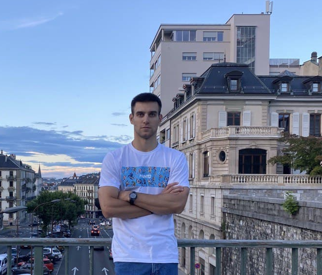

Павленко Станіслав Федорович
Дата народження: 09 листопада 1996 року
Освіта:
- Черкаський інститут пожежної безпеки ім.Героїв Чорнобиля. Освітній рівень бакалавр за напрямком [цивільний захист]. Технічна спеціалізація.
- Черкаський інститут пожежної безпеки ім.Героїв Чорнобиля. Освітній рівень магістр за напрямком [пожежна безпека]. Вузькопрофільна спеціалізація.
Додаткова освіта:
| Вид заняття |
Назва |
Дата |
| Онлайн курси |
"Основы вёрстки сайта" від netology |
04.10.26-21.10.21 |
| Онлайн уроки |
"Практический курс HTML, CSS, JavaScript" Владилена Минина |
01.11.2021-25.11.2021 |
| Онлайн курс |
"Онлайн курс по торговле криптовалютой от 001К" |
07.05.2019-12.06.2019 |
| Марафон |
"Онлайн марафон по Java Script" |
25.11.2021-30.11.2021 |
Досвід роботи:
- З 2018 по 2019 роки працював начальником караулу в 22 ДПРЧ ГУ ДСНС України м.Кременчук;
- З 2019 по червень 2021 року працював інспектором відділення запобігання надзвичаним ситуаціям в 4 ДПРЗ ГУ ДСНС України м.Кременчук.
Професійні навички:
- вміння керувати особовим складом (підлеглими);
- вміння спілкуватися з людьми та працювати в команді;
- навички роботи з запереченнями;
- працював у сфері телефонних продаж;
- володіння основами CSS, HTML, JavaScript.
- вміння планувати робочий час та розподіляти обсяг роботи.
Особисті якості:
- активна життєва позиція, цілеспрямованість;
- здатність до швидкої адаптаціх у нових умовах;
- здатність до сприйняття інформації та швидкого навчання;
- готовність брати відповідальність;
- комунікабельність та ініціативність;
- аналітичний склад розуму;
- організованість.
Додаткова інформація:
Маю досвід ділового, професійного спілкування та листування з керівниками різних рівнів. Якісно виконую свої професійні обов'язки. Вільно володію українською та російською мовами, можу говорити та перекладати англійську.Я багато працював щоб досягти мети у своїй сфері роботи. Але коли зрозумів, що те, до чого так довго йшов не цінується у нинішній реаліях, я вирішив опанувати нову професію, де мою працю гідно оцінюватимуть.
Контактні дані:
- Мобільний телефон: +380961573937 (Telegram, WhatsApp, Viber);
- Email: staspavlenko322@gmail.com.